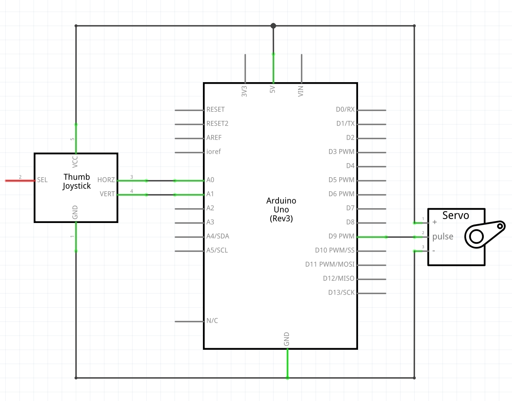

Timothy's Assignment 5!

Hardware
- Arduino Uno
- Servo motor
- Joystick
- Flashlight (optional)
- Hook-up wires
- Breadboard
Circuit
Schematic
Joystick position values
Serial monitor
Code
/*
8 Feb. 2019
Timothy Sun
A joystick controls the position of a servo!
Adapted from Sweep http://www.arduino.cc/en/Tutorial/Sweep
*/
#include //Arduino servo library
Servo myservo; // create servo object to control a servo
int pos = 0; // variable to store the servo position
int x = A0; // define x as joystick position value read from analog pin 0
int y = A1; // define y as joystick position value read from analog pin 1
int xval = 0; // initialize xval to 0
int yval = 0; // initialize yval to 0
void setup() {
myservo.attach(9); // attaches the servo on pin 9 to the servo object
Serial.begin(9600); // opens serial port, sets data rate to 9600 bps
}
void loop() {
xval = analogRead(x); // set xval to value read from x, which is analog pin 0
yval = analogRead(y); // set yval to value read from y, which is analog pin 1
delay(300); // waits 300 ms for servo to get to position
if(xval <= 1024 && xval >= 768 && yval <= 768 && yval >= 256) { // if the joystick is pressed up (perspective is from joystick connected to breadboard)
pos = 45; // set position to 45 degrees
myservo.write(pos); // tell servo to go to "pos" position
Serial.println(pos); // prints servo position to serial monitor
}
else if(xval <= 256 && xval >= 0 && yval <= 768 && yval >= 256) { // if the joystick is pressed down
pos = 90; // set position to 90 degrees
myservo.write(pos); // tell servo to go to "pos" position
Serial.println(pos); // prints servo position to serial monitor
}
else if(xval <= 768 && xval >= 256 && yval <= 1024 && yval >= 768) { // if the joystick is pressed right
pos = 180; // set position to 180 degrees
myservo.write(pos); // tell servo to go to "pos" position
Serial.println(pos); // prints servo position to serial monitor
}
else if(xval <= 768 && xval >= 256 && yval <= 256 && yval >= 0) { // if the joystick is pressed left
pos = 135; // set position to 135 degrees
myservo.write(pos); // tell servo to go to "pos" position
Serial.println(pos); // prints servo position to serial monitor
}
}
}